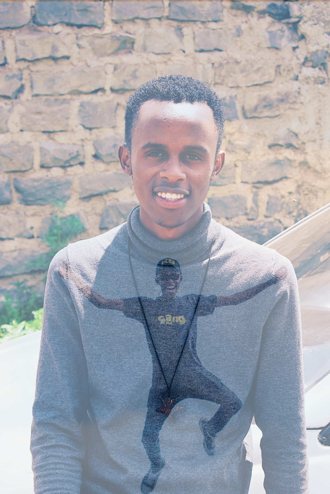

Kiprop Allan

I am a Software Engineer based in Nairobi, Kenya. Inspired by innovation, I thrive on experimenting with different concepts and have been commended for inspiring and developing unique and thought provoking ideas. I have cultivated web development, programming and script development skills through a range of practical experience.These strengths, combined with my passion for the industry have created a strong foundation to meet the needs of the Web Developer opportunity. I strive to contribute to an energetic and team-driven work culture. I am artistic and dependable but also aim to bring a cheerful and enthusiastic attitude to every project.